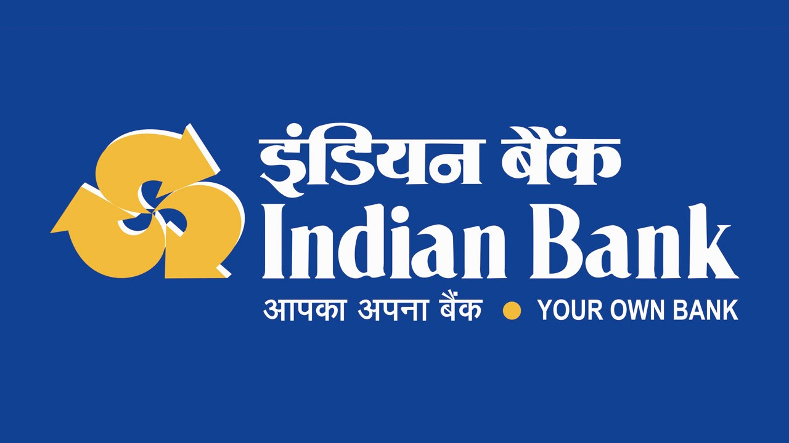

Idian Bank
Indian Bank is a major nationalised bank. It is under the ownership of the Ministry of Finance, Government of India. It was established in 1907 and is headquartered in Chennai, India. It serves over 100 million customers with 41,620 employees, 6,004 branches with 5,428 ATMs and Cash deposit machines and is one of the top performing public sector banks in India. Total business of the bank has touched ₹930,000 crore (US$120 billion) as on 31 March 2021. Bank's Information Systems and Security processes certified with ISO27001:2013 standard and is among very few Banks certified worldwide. It has overseas branches in Colombo and Singapore including a Foreign Currency Banking Unit at Colombo and Jaffna. It has 227 Overseas Correspondent banks in 75 countries. Since 1978, the Government of India has owned the bank. As per the announcement made by the Indian Finance Minister Nirmala Sitharaman on 30 August 2019, Allahabad Bank merged from 1 April 2020, making it the seventh largest bank in the country.
History
Early formation and expansion In the last quarter of 1906, Madras (now Chennai) was hit by the worst financial crisis the city was ever to suffer.[1] Of the three best-known British commercial names in 19th-century Madras, one crashed; a second had to be resurrected by a distress sale; and the third had to be bailed out by a benevolent benefactor. Arbuthnot & Co, which failed, was considered the soundest of the three. Parry's (now EID Parry), may have been the earliest of them and Binny and Co.'s founders may have had the oldest associations with Madras, but it was Arbuthnot, established in 1810s, that was the city's strongest commercial organisation in the 19th Century. A key figure in the bankruptcy case for Arbuthnot's was the Madras lawyer, V. Krishnaswamy Iyer who founded the Indian bank which was an offshoot of nationalistic fervour and the Swadeshi movement, when the then British Arbuthnot Bank collapsed and the Indian Bank emerged. Mr V. Krishnaswamy Iyer solicited the support of the Nagarathar Chettiars authored by Mr. Ramasamy Chettiar, who was Annamalai Chettiar's elder brother. Sri V. Krishnaswamy Iyer and Mr. Ramasamy Chettiar were one of the first directors of Indian Bank. Later on in 1915, Mr. Annamalai Chettiar was inducted into the board of the Indian Bank. It commenced operations on 15 August 1907 with its head office in Parry's Building, Parry Corner, Madras. In 1932 IB opened a branch in Colombo. It opened its second branch in Ceylon in 1935 at Jaffna, but closed it in 1939.[2] IB next opened a branch in Rangoon, Burma, in late 1940s. Then in late 1941 IB opened branches in Singapore, Kuala Lumpur, Ipoh, and Penang. The exigencies of war forced IB to close its Singapore and Malayan branches with months. The closing of the Singapore branch resulted in little loss to IB; the loss of the branches in Malaya was much more costly.[2]